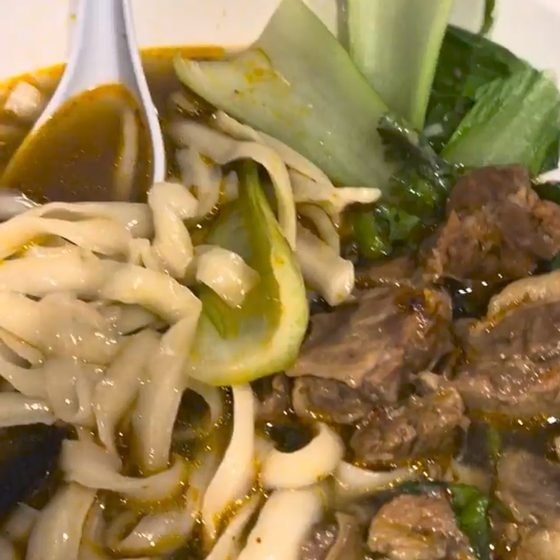

Knife-cut noodle soup
Ribbons of knife-cut noodles in beef broth with bok choy. Tomato and egg is the other favourite.
Menu
Photos are from the shop's Google Maps page. The full menu and prices would go here.
From the shop's printed menu.
Finished your noodles but not your soup? On many noodle dishes, the next serving of noodles is on us. Ask when you order.